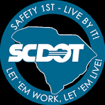
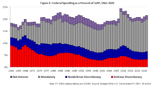
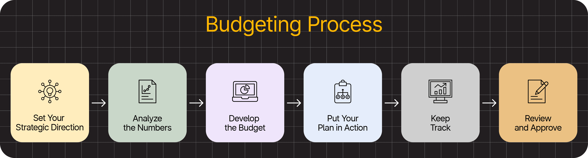

Budget Planning & Forecasting
Review planned maintenance budget, forecast upcoming needs, and support funding decisions across districts.
View Forecasting Tools

Review planned maintenance budget, forecast upcoming needs, and support funding decisions across districts.
View Forecasting Tools

